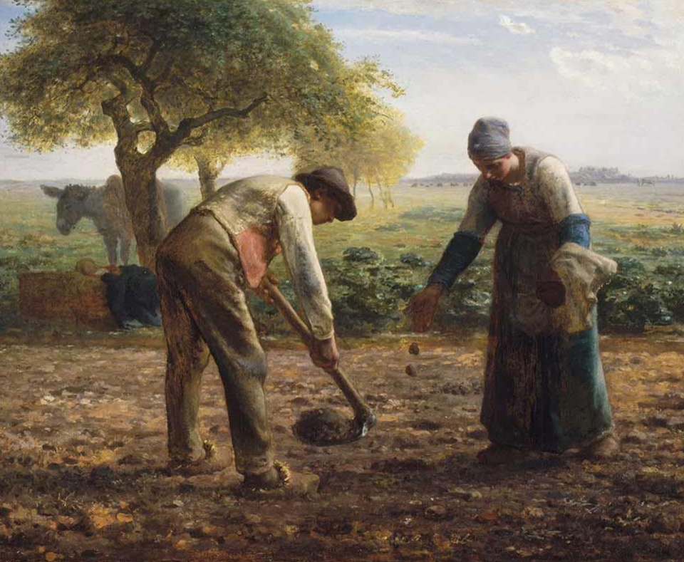

Ao Vencedor, a plantação

Há quem diga:
- É a guerra que cria a tecnologia, pois ela nos encoraja a sermos melhores que nossos inimigos.
- Somente através de uma revolução sangrenta o Brasil poderá se desenvolver, assim como aconteceu nos países ricoscomo a França.
- Através da concorrência, nós nos tornamos melhores, nos adaptamos, e os mais aptos vencem.
- A história de todas as sociedades até hoje existentes é a história da luta de classes.
No fundo, esse é o mesmo pensamento que Machado de Assis sintetizou em Quincas borba: "Ao vencido, ódio ou compaixão; ao vencedor, as batatas." Em uma lógica de competição, em um paradigma do ganhador leva tudo, se destruirmos, vencemos. E no processo da luta, atingimos nosso ápice.
Indo mais a fundo podemos traçar o lugar onde temos os registros dessa cosmologia do combate. O desenvolvimento vem da batalha. A guerra gera a ciência e a morte gera a vida. Esse triste pensamento é recorrente na história, mas podemos traçar sua primeira aparição a um filósofo grego: Heráclito. Séculos depois, ainda vemos traços de Heráclito no comunismo, com a luta de classes, ou no fascismo com a adoração da guerra e movimento, pois eles tem um ponto em comum: Da luta, a história surge. É da dialética que o universo expande.
Heráclito foi um dos primeiros a sistematizar isso:
"O embate é pai de todas as coisas e rei de todas; a uns revelou deuses, a outros homens; a uns fez escravos, a outros livres."
"É preciso saber que o embate é comum, o conflito é justiça, e todas as coisas acontecem segundo o conflito e a necessidade."
E o pior de tudo é: Isso tudo parece verdade. Lutar e vencer. Ganhar as batatas. Entretanto, no silêncio que sucede à batalha, o vencedor olha para as batatas, as come, se enjoa e olha em volta: o que realmente conquistou? Qual é o valor disso tudo? Alexandre o Grande chegou até a Índia e depois morreu cercado por seus compatriotas ambiciosos, talvez envenenado. Também padeceu Júlio César: Até Brutus o apunhalou. A grandeza é momentânea.
Ao vencedor, o tédio de possuir as batatas ou a destruição pela ambição: sua ou dos seus amigos. A guerra é um energizante? Eu digo: é claro. Mas é um energizante que paga conta alta.
Existe algum problema com a ideia do conflito gerador. O brio, o tesão, a vontade de fazer algo por afinidade para se aproximar do bem, é mais forte que o conflito. Na guerra, há a competição, nos desenvolvemos. Mas se fosse só ela, ainda seríamos neandertais em clãs restritos, na guerra de todos contra todos. Pedra contra pedra.
Deve existir algo diferente da competição que sustentou o desenvolvimento, apesar dos embates.
E esse algo na verdade tem dois nomes: o amor e a fraternidade. O amor de servir o próximo, de estudar na solidão, de descobrir e compartilhar. O que levou Newton enfiar uma agulha por trás do globo ocular? E Einstein isolado na Suiça? A insistência humana é transcendente. Através da descoberta e da vontade de servir, a ciência se construiu. A economia se estabeleceu. É a cooperação que fundamenta o avanço e com base nisso segue.
Um homem que escreveu isso muito bem foi um pescador da Galileia: João. Ele vai subverter completamente as ideias de Heráclito e assim, antes do sangue, antes do fogo, antes do embate... no princípio era o Logos: traduzido para português como o Verbo.
Sem entrar no campo teológico, ficando na filosofia: me parece que a força dessa cosmologia é a criação por amor: um tesão que faz com que sirvamos os outros e alcancemos a realização como indivíduos, como família, e também como um grupo.
O conflito é tentador e, do muito desejar, podemos acabar como César ou Alexandre da Macedônia, iludidos pelo húbris das conquistas.
Assim podemos dizer: o desenvolvimento não se dá por causa do conflito, atrito, mas sim apesar dele. O universo se expande devido a um brio, uma vontade que ainda vive dentro de nós.
Portanto, parabéns ao vencedor que ganhou as batatas. Mas e agora? Agora as plante, multiplique e chame o perdedor para plantar do seu lado.